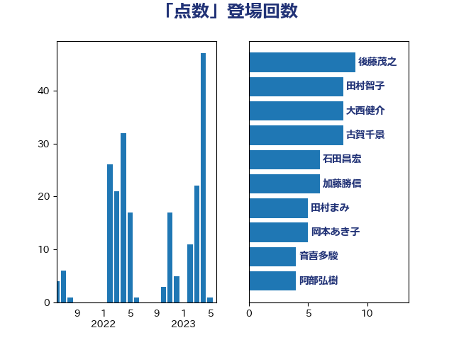

単語「点数」

| 後藤茂之 | 自由民主党 | 9 回 |
| 田村智子 | 日本共産党 | 8 回 |
| 大西健介 | 立憲民主党 | 8 回 |
| 古賀千景 | 立憲民主党 | 8 回 |
| 石田昌宏 | 自由民主党 | 6 回 |
| 加藤勝信 | 自由民主党 | 6 回 |
| 田村まみ | 国民民主党 | 5 回 |
| 岡本あき子 | 立憲民主党 | 5 回 |
| 音喜多駿 | 日本維新の会 | 4 回 |
| 阿部弘樹 | 日本維新の会 | 4 回 |
| 藤木眞也 | 自由民主党 | 4 回 |
| 秋本真利 | 自由民主党 | 4 回 |
| 山本剛正 | 日本維新の会 | 4 回 |
| 一谷勇一郎 | 日本維新の会 | 4 回 |
| 西田実仁 | 公明党 | 3 回 |
| 羽生田俊 | 自由民主党 | 3 回 |
| 櫻井周 | 立憲民主党 | 3 回 |
| 川田龍平 | 立憲民主党 | 3 回 |
| 石原正敬 | 自由民主党 | 2 回 |
| 石井拓 | 自由民主党 | 2 回 |
| 牧義夫 | 立憲民主党 | 2 回 |
| 本田顕子 | 自由民主党 | 2 回 |
| 斉藤鉄夫 | 公明党 | 2 回 |
| 平林晃 | 公明党 | 2 回 |
| 嘉田由紀子 | 無所属 | 2 回 |
| 吉田統彦 | 立憲民主党 | 2 回 |
| 古川康 | 自由民主党 | 2 回 |
| 下野六太 | 公明党 | 2 回 |
| 鰐淵洋子 | 公明党 | 1 回 |
| 高階恵美子 | 自由民主党 | 1 回 |
| 須藤元気 | 無所属 | 1 回 |
| 谷田川元 | 立憲民主党 | 1 回 |
| 西村康稔 | 自由民主党 | 1 回 |
| 萩生田光一 | 自由民主党 | 1 回 |
| 芳賀道也 | 国民民主党 | 1 回 |
| 舩後靖彦 | れいわ新選組 | 1 回 |
| 緒方林太郎 | 無所属 | 1 回 |
| 緑川貴士 | 立憲民主党 | 1 回 |
| 米山隆一 | 立憲民主党 | 1 回 |
| 稲津久 | 公明党 | 1 回 |
| 福島伸享 | 無所属 | 1 回 |
| 石井苗子 | 日本維新の会 | 1 回 |
| 畦元将吾 | 自由民主党 | 1 回 |
| 田村憲久 | 自由民主党 | 1 回 |
| 牧原秀樹 | 自由民主党 | 1 回 |
| 源馬謙太郎 | 立憲民主党 | 1 回 |
| 浅尾慶一郎 | 自由民主党 | 1 回 |
| 沢田良 | 日本維新の会 | 1 回 |
| 比嘉奈津美 | 自由民主党 | 1 回 |
| 森屋隆 | 立憲民主党 | 1 回 |
| 梅村聡 | 日本維新の会 | 1 回 |
| 本庄知史 | 立憲民主党 | 1 回 |
| 末松信介 | 自由民主党 | 1 回 |
| 星北斗 | 自由民主党 | 1 回 |
| 庄子賢一 | 公明党 | 1 回 |
| 川崎ひでと | 自由民主党 | 1 回 |
| 山際大志郎 | 自由民主党 | 1 回 |
| 小沢雅仁 | 立憲民主党 | 1 回 |
| 小池晃 | 日本共産党 | 1 回 |
| 小川淳也 | 立憲民主党 | 1 回 |
| 吉良よし子 | 日本共産党 | 1 回 |
| 吉田とも代 | 日本維新の会 | 1 回 |
| 伊佐進一 | 公明党 | 1 回 |
| 今枝宗一郎 | 自由民主党 | 1 回 |
| 中島克仁 | 立憲民主党 | 1 回 |
| 三浦信祐 | 公明党 | 1 回 |
| 三上えり | 立憲民主党 | 1 回 |